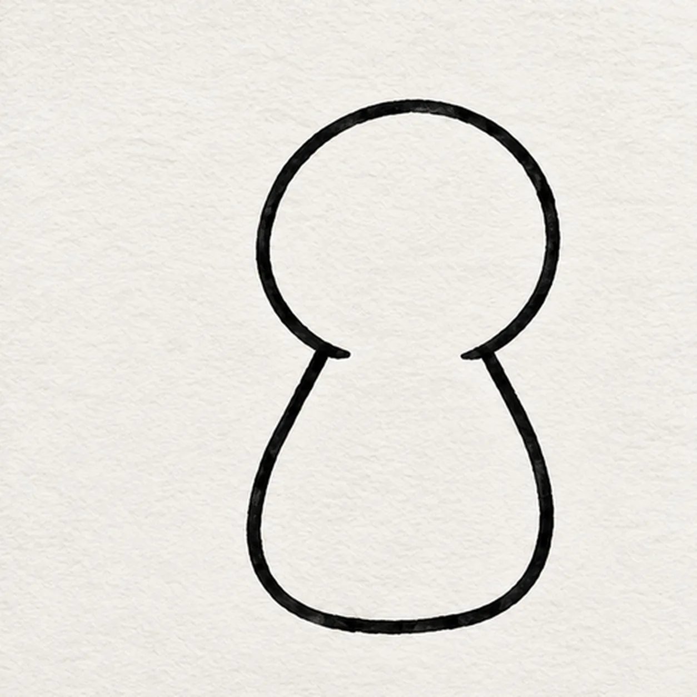
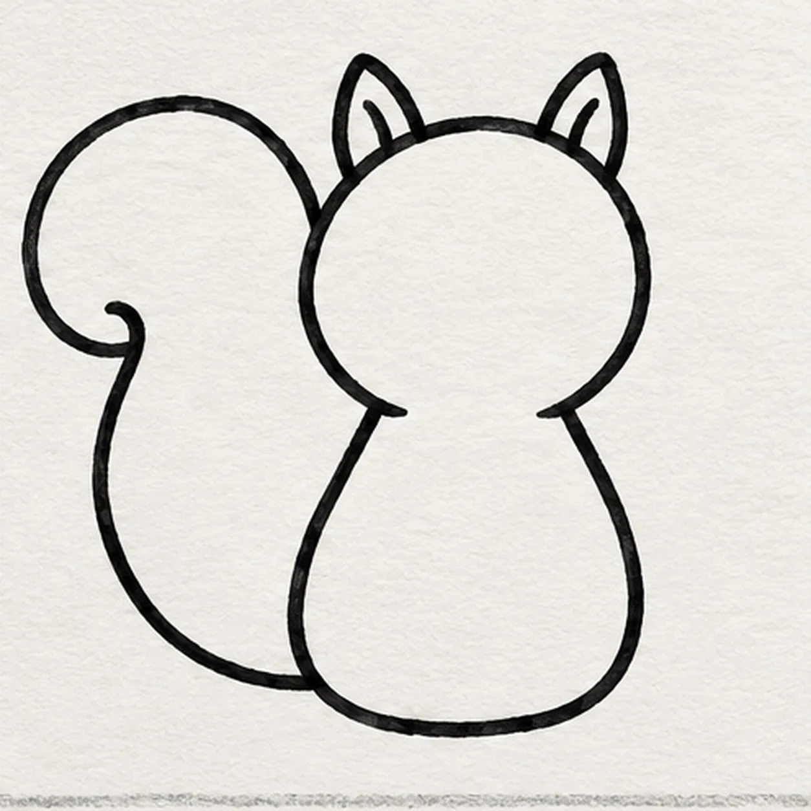
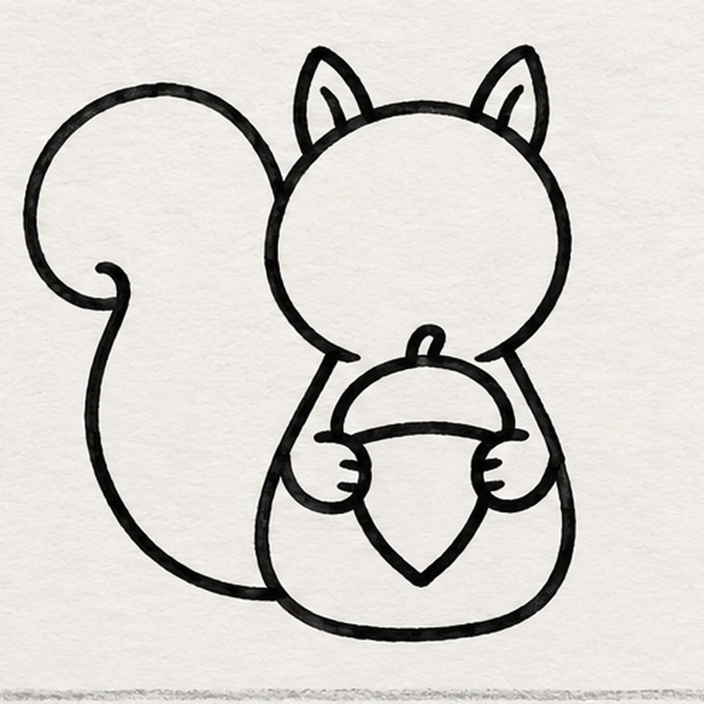
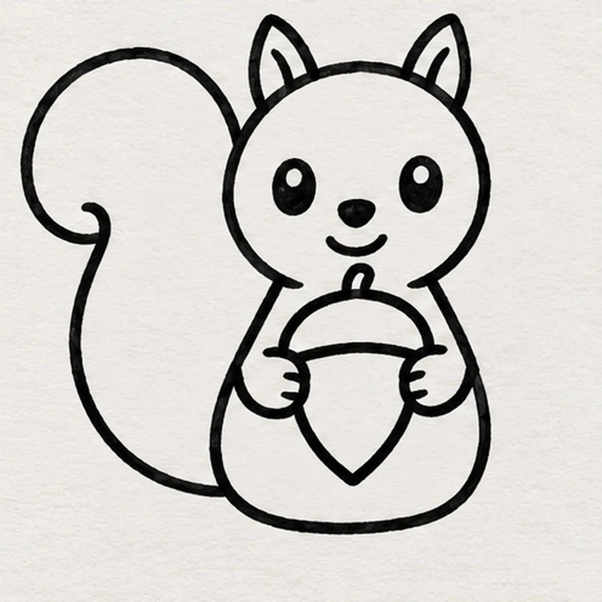
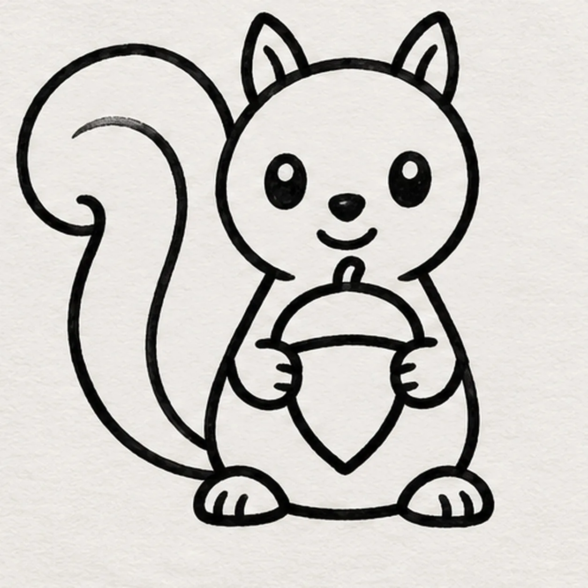

Felt-tip marker mode
Let's draw a cartoon squirrel holding an acorn
Treat this as one playful practice round: sketch the idea loosely, simplify the shapes, then commit with confident marker outlines and bright fills.
-
01

Join head and body
With a black felt tip, draw a round head near the page center and run its lower edge into a short pear-shaped body. Leave room on the left for a large tail and a gap at the chest for one acorn.
Marker tip: Keep the round head above the small body and leave the left side open for the tail.
-
02

Curl the tail
From the left hip, sweep a broad tail up beside the head and curl its tip inward without touching the face. Attach one small pointed ear to each top side of the head.
Marker tip: Check that both ears attach to the fixed head and the tail meets the left hip.
-
03

Hold one acorn
In the reserved chest gap, draw one upright acorn with a pointed bottom and rounded cap. Bring one small paw from each shoulder to the nut's sides so both paws visibly hold it.
Marker tip: Count one acorn and two paws; the cap should sit directly beneath the chin.
-
04

Give it a curious face
Set two small eyes across the face. Below them, dot a tiny nose and curve a short smile toward the right cheek, keeping the ears and acorn clear.
Marker tip: Keep the two eyes separated so the tiny nose and short smile fit below them.
-
05

Settle the squirrel
Follow the inside of the tail with one broad curved mark, stopping before its curled tip. Under the body, attach two short rounded feet, one on each side of the acorn's point.
Marker tip: Follow the tail curl with the inner mark and count two feet at the base.
-
06

Color the squirrel
Fill the fixed body and head warm orange, the same curled tail rust, the acorn tan with a dark brown cap, and the belly pale cream. Leave tiny paper streaks, retrace the established edges, and link the existing nose and smile with one tiny mark.
Marker tip: Pull color in short strokes so the drawing paper still shows through the fills.